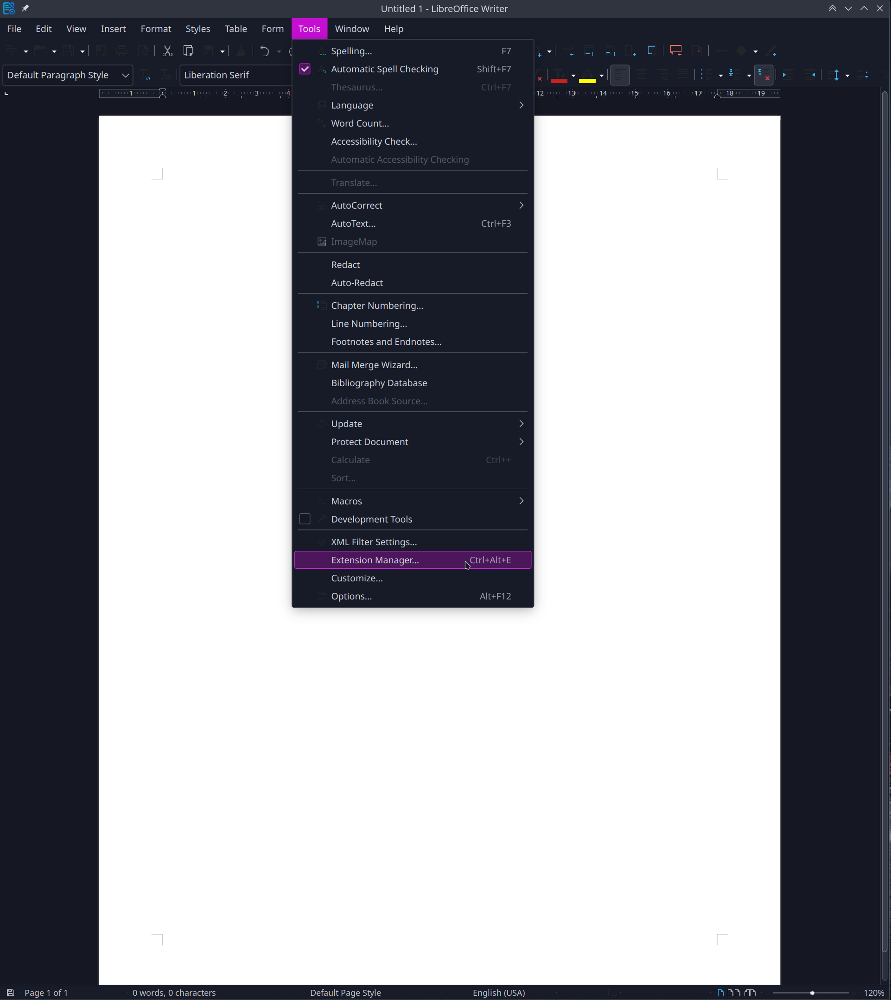

Over the last several years daily driving Arch and Debian based Linux operating systems I've encountered many little quirks. One that's occurred several times over the last few years is spell check not working. Most recently I encountered this with my Kubuntu 23.04 installation. Everything was working fine when suddenly the Libre Office spell checker ceased functioning. Let's go through 2 possible causes.
Let's start with a solution that fixed the problems I ran into while using Arch based distributions.
We'll do this by checking if Hunspell is installed. Hunspell is the spell checker used by many open source and proprietary programs, including Linux.
Here's how to check if Hunspell is installed with Arch based distos:
As you can see in the image above, Hunspell isn't installed. If it was found on your system along with the language you were expecting, you can skip the next step.
Let's print the list of packages we want so you can install the ones you want or need.
The packages we want are "hunspell" and the specific language we want, in my case hunspell-en_us
As you can see below this was enough to fix the spell check issues in my Garuda Linux install.
Now let's take do the same thing in a Debian based distro.
We can check to see if hunspell is installed with dpkg.
If you've got hunspell installed you can skip the next step of installing it, otherwise the command to do so is below.
Let's open up Libre Office and click on Tools > Extension Manager.
Click on "Get more extensions online..." and then download the applicable language. After that press add.
Now spell check is working.
This has been a common occurance I've run into daily driving Linux over the last few years. These solutions are for Arch and Debian based distros, however the same principles apply in other Linux distors. Hopefully you found these solutions useful.